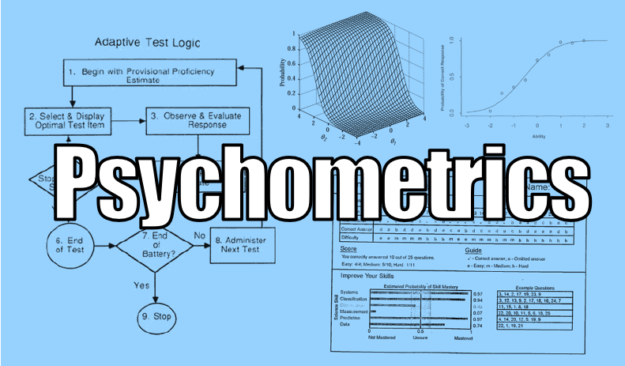

Light bulbs in my head
Here are some notions and min steps that I took to explore an incredible world.
(still working on, please wait)
It has been well-known that particle swarm optimization supports multi-object optimization and has a reputation for its swift convergence with fewer parameters and information sharing. All of these ignite me to imagine: can we benefit from this algorithm when estimating multidimensional abilities or item parameters, and is there a connection between information sharing and prior setting in Bayesian?
Psychological or educational tests often intend to measure multiple traits which help interpret multifaceted cognitive processes, but most item selection methods for computerized classification testing with non-statistical constraints are limited to the unidimensional case. Thus, I expanded my newly-proposed methods to the multidimensional scenario and tried to see what would happen.
Beloved things
Here are treasures that shed light on my life.

Serendipity
One amazing evening in September 2017, I tentatively wrote to Prof. Minqiang Zhang
to introduce myself and see if he would be interested in mentoring me.
I got a positive response after only 36 seconds!
Bao
I had the most beautiful five years in my life when I was with Bao, a blessing from god.
Bao taught me how to love and let me know how it feels to be loved.
Taylor Swift
Her enthusiasm towards her career and resilience in tribulations always galvanize me
to keep making great efforts for my goal and to retrieve from afflictions.
Get In Touch :D
Please feel free to contact me.